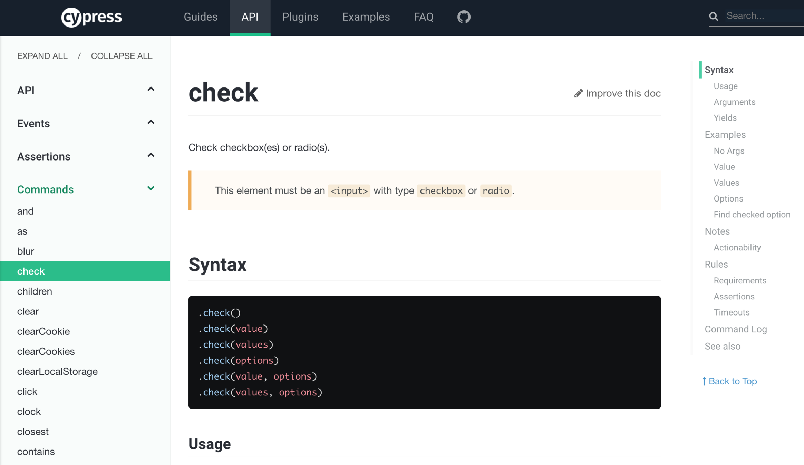
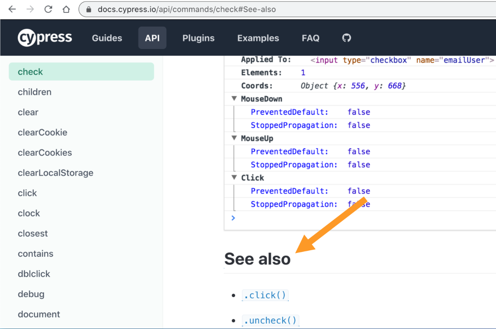

Writing docs is hard and takes effort. Luckily, describing something is still easier than making that something. We at Cypress put a lot of effort into improving our documentation which is really appreciated by our users. In this blog post, I want to list things we tried to avoid, because they hurt the documentation in my opinion.
- The marketing copy
- The documentation guides
- The reference pages
- The tutorials
- The blog posts
- The conference talks and presentations
- Common obstacles to good documentation
- Tips
- Do not compare yourself to other tools
- Recap
Most of these things are also covered in my presentation for CityJS 2021 titled "TDD: Test-Driven Documentation". You can flip through the slides below:
The marketing copy
Marketing copy is everything you have on your static site and the introductory pages - things that describe your tool to the first time visitor. The marketing copy often suffers from what is jokingly described as:
Selling the drills and not the holes
Imagine you are making electric drills and selling them at a hardware store. People come to buy a drill, but they really do not need or want your drill. They need a hole! Thus you should describe how your tool makes the right hole for that customer.
Cypress' marketing static site at www.cypress.io avoids the trap of selling the drills pretty well. It does not describe itself as "A cross-platform e2e test runner." for example. Instead we talk about the user problems we solve: "Fast, easy and reliable testing for anything that runs in a browser."
The documentation guides
Often your documentation contains a longer guide like running Cypress on CI or using Cypress for Visual Testing. If you do not explain to the user why they would benefit from reading such a long document, what they would learn, then the users are likely skip it.
Do not start the long page with "step 1: ..."
Instead, list what the user is about to learn. Here is how Cypress Command Line Guide starts:
A related mistake when writing longer guides is to skip the prerequisites. Clearly state what you assume the user knows before starting the reading journey: "This guide assumes you know X and have Y and Z".
The reference pages
Reference pages explains particular methods or classes your documentation provides. A typical example would be Cypress cy.check() or cy.click() command pages:

I often see the reference pages underwhelming due to:
- Lack of examples
- Examples out of date
- Examples are all "foo" and "bar"
- Non-uniform page structure
- Missing command history
- Not linking to larger guides and tutorials
If your reference page is longer than a few paragraphs, make sure every subsection includes an anchor link the user can copy and share.
The tutorials
A tutorial is a step-by-step guide teaching the user how to solve a very particular problem. Again, we are not selling a drill, we are teaching the user how to drill a hole in a specific situation. Common problems to avoid:
- Tutorials are out of date
- Missing source code
- Missing CI
- Expectations not stated
I always try to explicitly state the software versions used, and to have an evergreen example repo linked from for the tutorial. The repo must have a configured continuous integration service to run the tests and keep the dependencies up to date.
The blog posts
I like to blog, a huge surprise, right? Well, when you write a blog post, make sure that:
The blog post has the published date
Really, this is my number one question when reading a blog post - is this still relevant? This blog post has a date at the top. Cypress blog posts have the date at the top AND in their URLs
Please include the software versions used during writing of the blog. Sometimes I will include it at the start of the writing.
1 | In this blog post I am using Cypress v6.5.0. |
A useful tip is to include the code block with the install command and dependency versions
1 | npm i -D cypress |
Or show the package.json file if it is small, like the blog post Presentations with Reveal.js and Vite does:
1 | { |
The conference talks and presentations
When giving a talk you can only show the highlights and a very limited amount of text on the slide. Please, include any relevant links and put them on the slide to allow viewers to browse if they are interested in that topic. Do not wait until the very last slide - include the links where they are relevant!
Here is my "Installing Cypress" slide from the recent Introduction to Cypress presentation. Notice the links to the Cypress repository and the introduction guide.
Here is the next slide showing a typical Cypress test. The slide includes the link to the Cypress API commands, so someone just browsing can immediately take a look.
Make the links obvious, make them actual HREFs (so the user can click, no need to copy and paste), and do not split the links across the multiple lines.
Tip: for more information about links, slides, and effective presentations, read my post Better slide format
Conference talks require a lot of preparation. I myself suffer from a common mistake: after the presentation is over, I forget to link it from our documentation site. All this effort - and the users never see it! So please, link the presentation from the relevant parts of the documentation.
Common obstacles to good documentation
- private documentation repository; no outside user can contribute even a small fix!
- diffuse responsibility for maintaining the docs
- hard to maintain due to technical stack
Remember - it is easier to write documentation describing what you already have solved, than to solve it! Without good docs, the users will not discover your awesome software, will not understand its brilliance, and will not use it.
Tips
- Let people learn more. At the end of every doc, include links to the related topics.

If the user read through the long guide, link them to particular tutorials and talks
- Implement good documentation search
See my presentations Find Me If You Can and Testing Your Documentation Search for details.
- Include links to the tools in the source comments
I often put the link to the GitHub repo right into the source comment. Users often copy the entire code fragment including the comment. The comment is then useful to everyone reading the code. For example, the GitHub Actions workflow file includes the link to the action's repo:
1 | # install dependencies, start the app, |
Do not compare yourself to other tools
Ughh this will be controversial.
I do not think you should have a table comparing your tool to the competitors' tools. Again, the users care about drilling the holes, not comparing drills. Show the users how your tool helps them. But more importantly, you are subjective and won't be impartial when describing other tools. If you have a table saying the competitor's tool does the thing X, you won't hear the end of "you looked at version A of the tool, the version B does it!" or "you did not know how to do thing X correctly", or similar things. At best, such lists will become a constant source of complaints. At worst, they will make you look mean, unfair, and even ignorant.
Here is an example from Testim's Why not Cypress documentation page:
Where to even begin here? You got us, Testim! We wrote Cypress in High Elvish language invented by J.R.R. Tolkien, good catch. Of course, the above paragraph would be very surprising to anyone who has seen or tried Cypress. Or opened the browser DevTools and used breakpoints or debugger keyword to step through the code. So by writing this one paragraph, Testim just destroyed any credibility with the readers, and for what?! I don't get it.
On a personal level, the above paragraph even hurts for another reason. Cypress is built on top of Blurbird promise library - we love its API, speed, features. It is even bundled under Cypress.Promise, that's how much we love this library! One of the core maintainers of Bluebird is Benjamin Gruenbaum who is now ... working at Testim. The FUD about promises and asynchronous actions from someone who should have known better is just weird, in my opinion.
Ok. So when the users do need to know the differences between the tools, how do you answer them? Here is the trick: you send them comparisons written by other users. Written by someone who can appear impartial and objective - someone you have not paid to write those reviews. Of course, no one forces you to send every review. You can pick the ones that make you look good, and you consider fair.
Whenever anyone asks me about other tools, I stress that our "competitor" are NOT other testing tools, but people who do not write tests. You can see such answer in my presentation End-to-end testing is hard - but it doesn't have to be, which you can watch on YouTube. The relevant slide is at the end and below:
Recap
Remember: when the user is struggling with your software, you cannot be there for them 99.9% of the time. But you know what can be helping the users every second and minute of the day? Your great documentation!